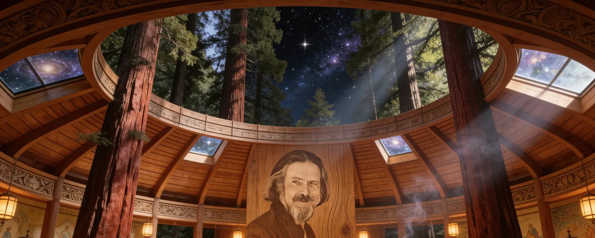

An archive that still speaks,
and a studio that makes it move.

- The archive
- More than 500 hours of recorded talks
- Stewardship
- Mark Watts and the Alan Watts Organization

- Film & animation
- Restoration and new films
- Experiences & research
- Domes, installations and tools for archives